After installing the Exact Online Connector Module, start the synchronization with your Exact Online Administration. Please be sure to login to Exact Online in the same browser (different tab) as Odoo.
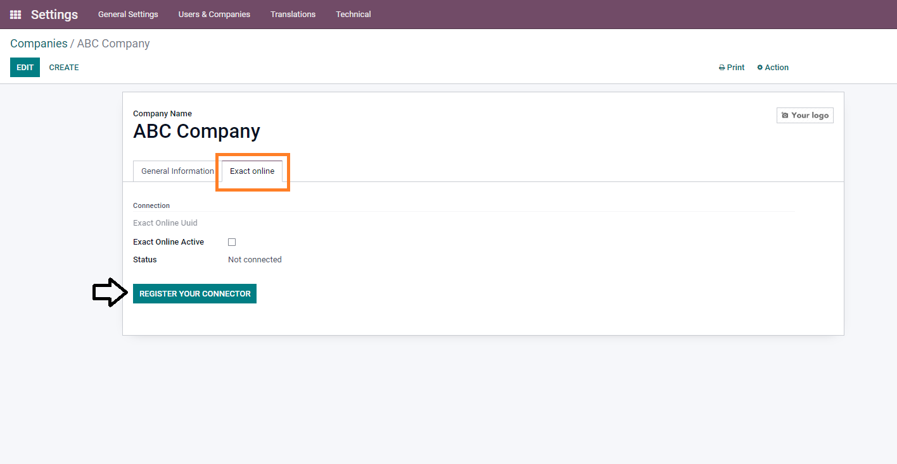Fill in the correct information about the Odoo database.
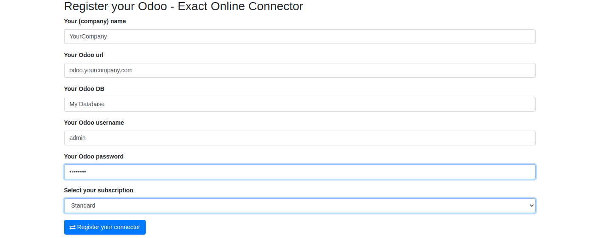Select your country and your company to link with Exact Online.
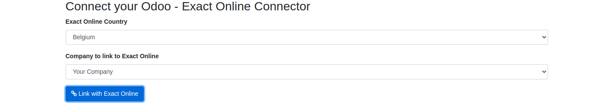Then select your Exact online administration.
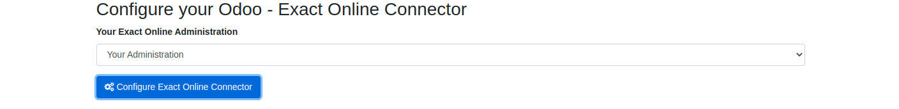After this, you will get a safety and privacy form from Exact Online where you give Odoo access to the administration of Exact Online.
After completing this setting, the connection is set.
You can close this tab in your browser.
When the payment of the connector is complete, you will be able to start the configuration of the initial synchronization.
Go to the settings of your company and to the tab ‘Exact Online’.
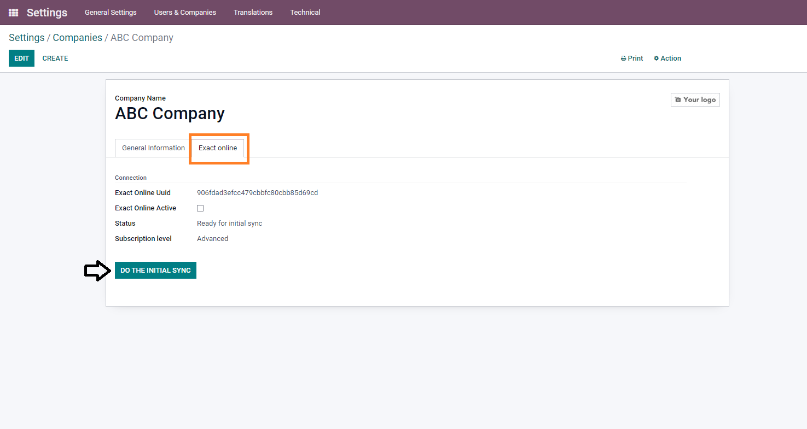Click on ‘do the initial sync’.
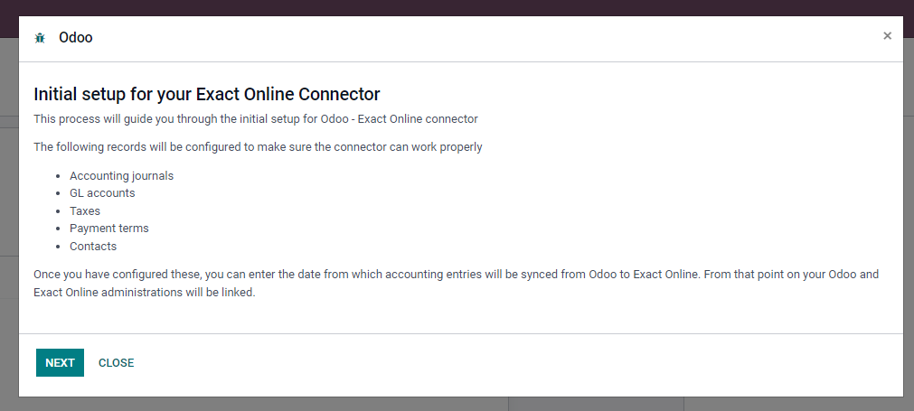Follow the setup to sync everything.
Example:
Configuring accounting journals.
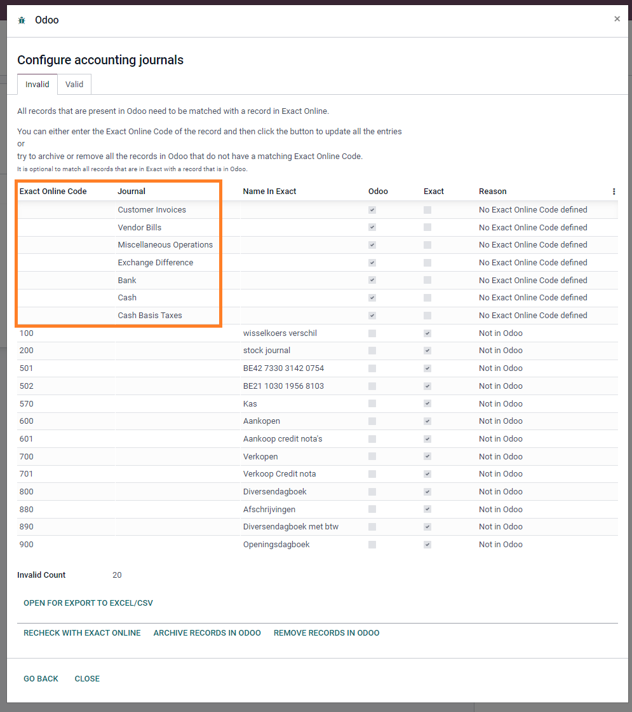You will get a list of all accounting journals in Odoo and in Exact online. The goal is to fill in the Exact online code to the Odoo journals that have to be synced.
You can do this by selecting the field ‘Exact online code’ and fill in the correct code to the journals that are in Odoo but not in Exact online: They have no Exact Online code defined.
The Exact online code, you can find in the same list, or in Exact online itself.
After filling in the correct codes, you can click on ‘Update records in odoo (below). Then these codes will be saved on the journal.
If all journals in Odoo receive an Exact Online code, you can move on to the next step. The correct journals will be visible in the ‘Valid’ tab.
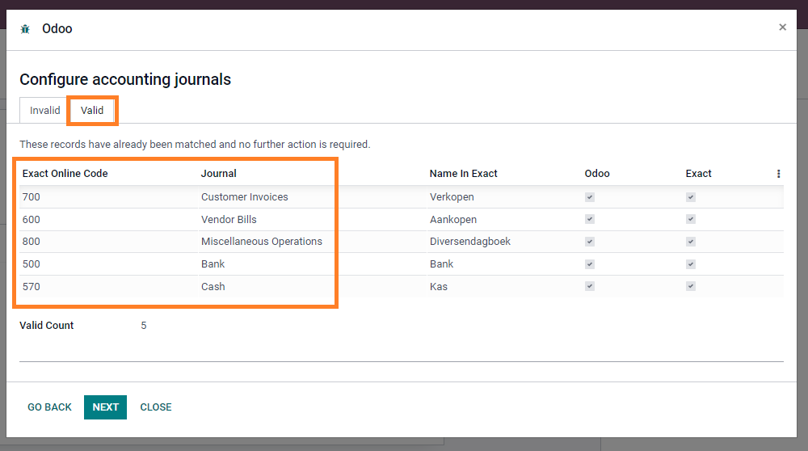If some journals do not have to be synchronized, you can archive or delete them from Odoo.
Do the same for the next steps.
For the Partners, it is possible to initially synchronize the partners from Odoo to Exact Online or the other way round.
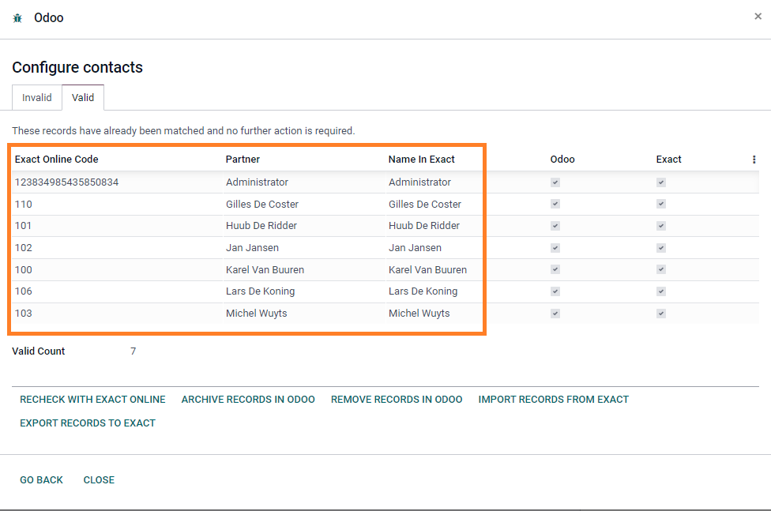After finishing these steps, you can select the journals to sync and also from which date (also in the past) the accounting entries will be synchronized.
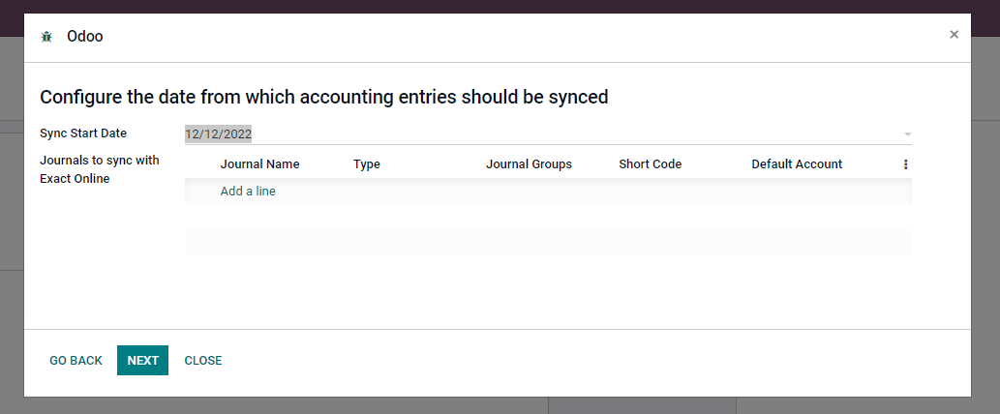 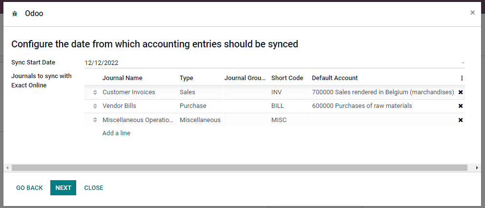If invoices from the past need to be synchronized, you can choose to do this.
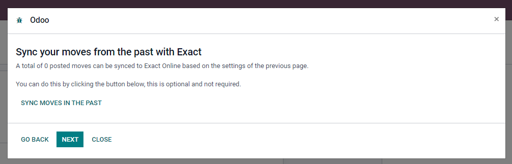If done, you are ready to use the connector. From now on all partners and selected journals will be synchronized.
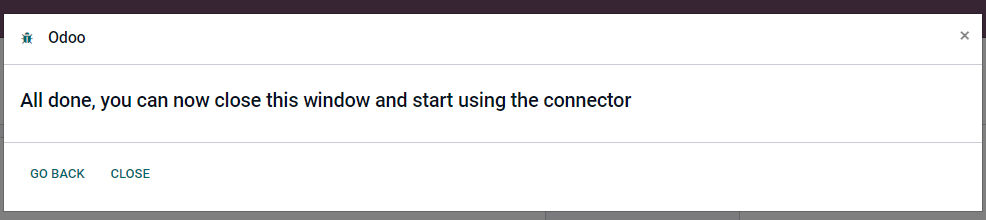| Standard subscription | Advanced subscription | |
|---|---|---|
| Synchronisation of contacts | yes | yes |
| Synchronisation of invoices | yes | yes |
| Synchronisation of payments | no | yes |
| Price | € 588 / year | € 828 / year |
-
Is this app compatible with Odoo Community as well as Enterprise?
Yes, this app works perfectly with Odoo Enterprise (Odoo.sh & Premise) as well as Community.
-
I want some customization in this app. How can I request it?
Please contact us at sales@callista.be to request customization or leave a message using our website callista.be.
-
Is this app free?
No, you have to pay for a subscription. There are two types of subscriptions. With the standard subscription, contacts and invoices are synchronized with Exact Online. With the advanced subscription also payments are synchronized back to Odoo.
The subscriptions are valid for any available version of Odoo. -
How do I set up this synchronisation?
Using a wizard you can easily set up the synchronisation. There is a manual available to support every step in the configuration.
-
Do I get free updates?
Yes, you will get free updates.
-
Is this application compatible with odoo.com (Odoo Online)?
No, this application is not compatible with odoo.com (Odoo Online).
Please mail us for support on support@callista.be.
Multi-language
We have translations available for English and Dutch. If you want to add other languages you can contact us on support@callista.be.